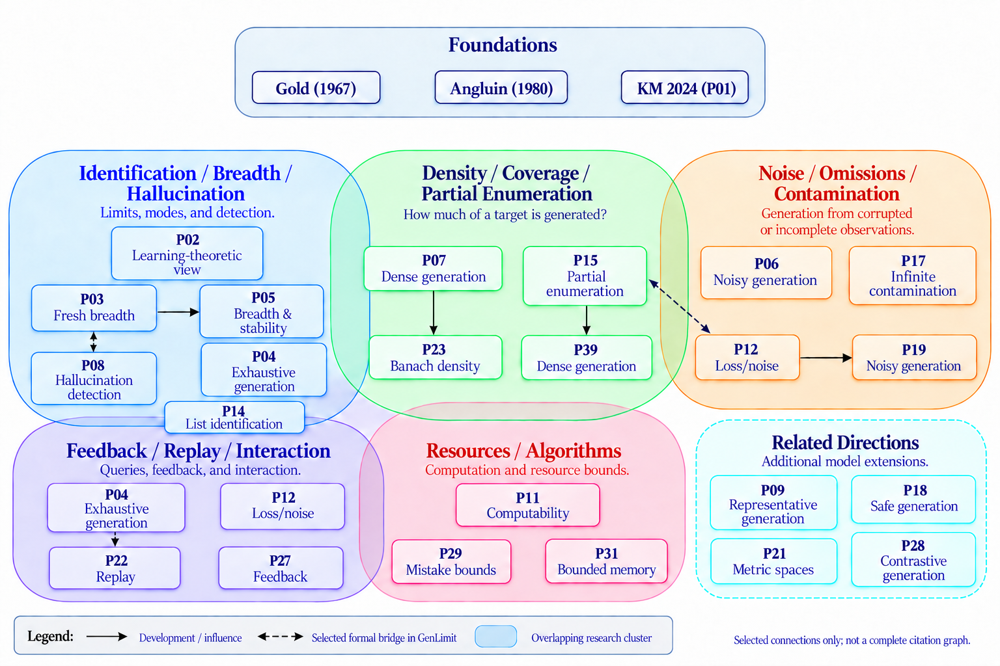

GenLimitLib: A Formal Library for Language Generation in the Limit and AI-Assisted Mathematical Research
Language generation in the limit, introduced by Kleinberg and Mullainathan in 2024, is a young and rapidly growing literature. Its shared objects, essential assumptions, and reusable proof ideas are not yet organized. The authors ask whether formalization can give this literature a structured view and support human and AI-assisted research.
GenLimitLib is a source-aligned Lean 4 library covering 30 papers, including classical identification results of Gold and Angluin. It extracts shared definitions and reusable proof components, keeps paper-specific assumptions and statements, and records cross-paper relationships. Humans chose which papers and results to formalize and at what level (semantic versus finite-query). LLM experiments compare proof generation with minimal vocabulary (P), the full sub-library (PML), and an oracle-selected file subset (PML-Oracle), and also test mathematical reading comprehension.

Formalization exposed a gap in a published proof (Charikar–Pabbaraju, Claim 7), which was repaired. It also transferred a construction between papers and solved an open problem for the staircase family, all verified in Lean. Library access raised LLM proof success from 48/100 (P) to 79/100 (PML) and 81/100 (PML-Oracle), with lower API cost per valid proof.
| Condition | Valid proofs | API cost / valid proof |
|---|---|---|
| P | 48/100 | $2.76 |
| PML | 79/100 | $1.95 |
| PML-Oracle | 81/100 | $1.78 |